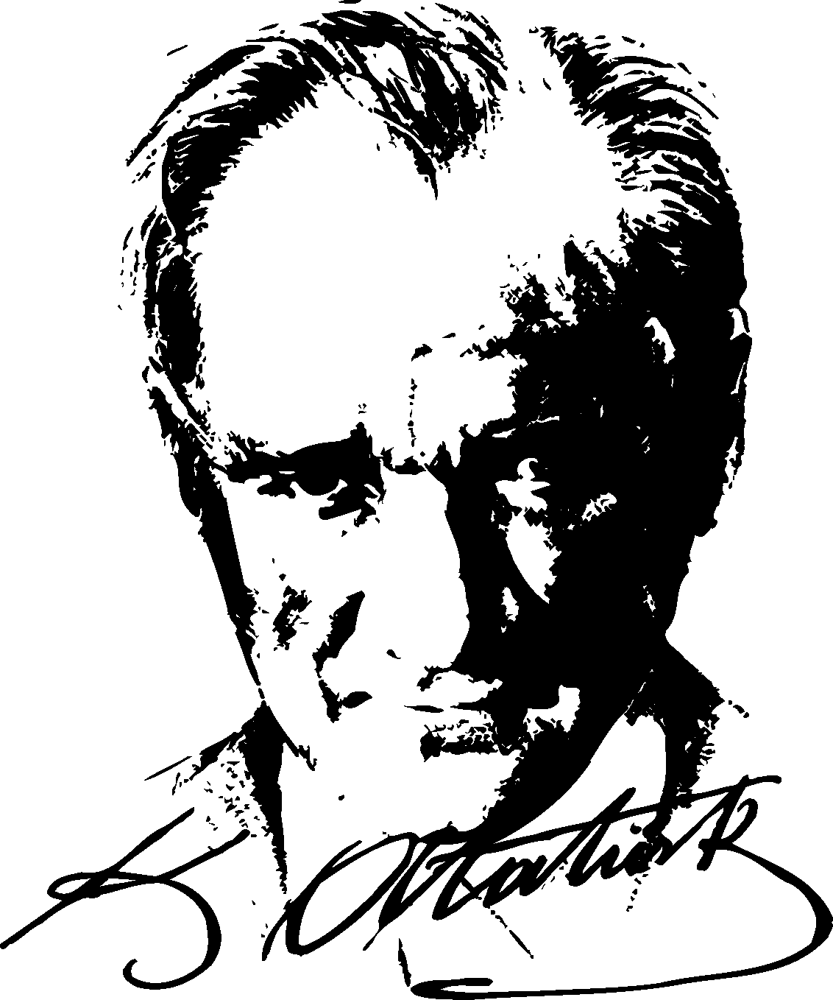
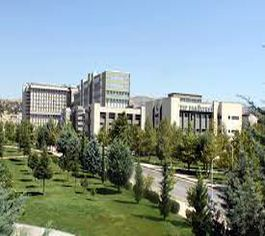
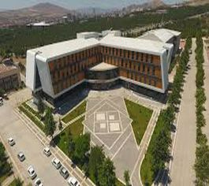
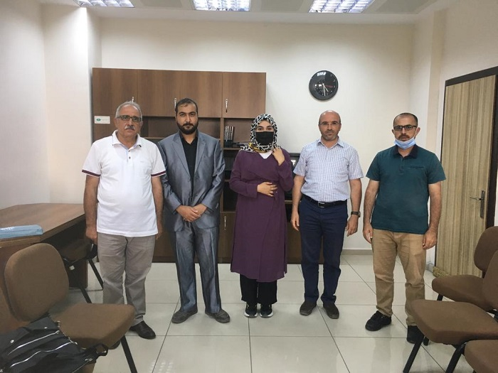
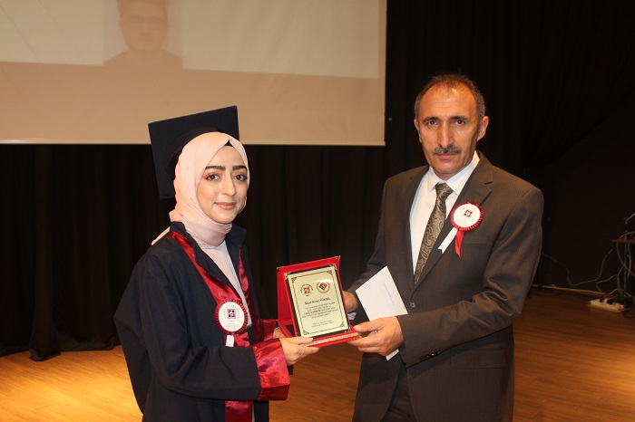
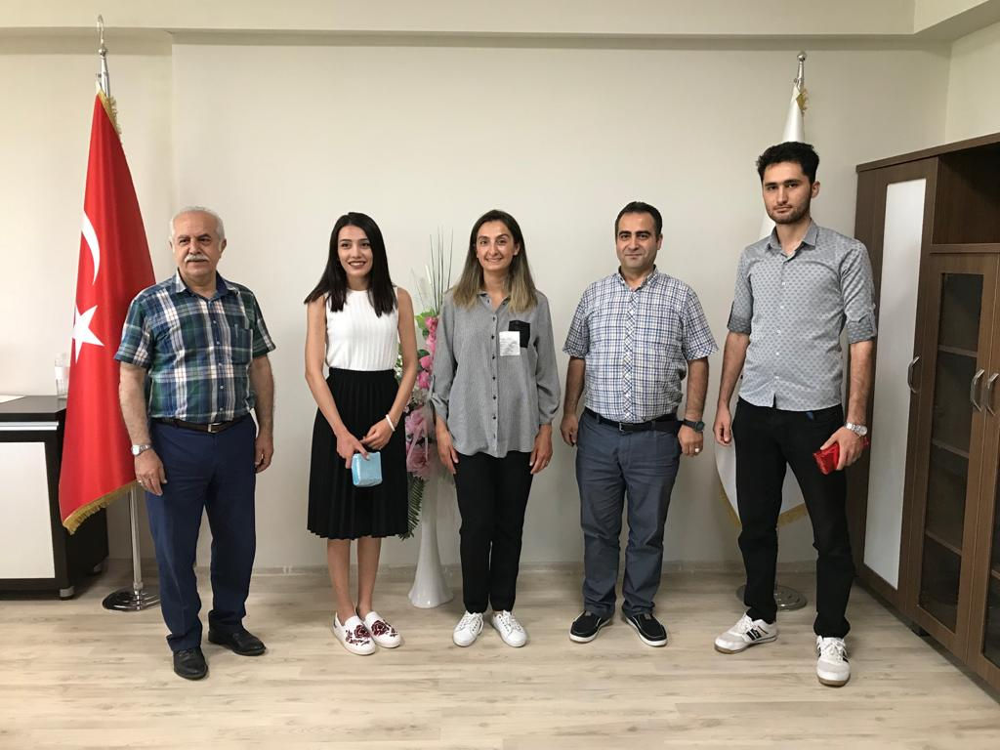
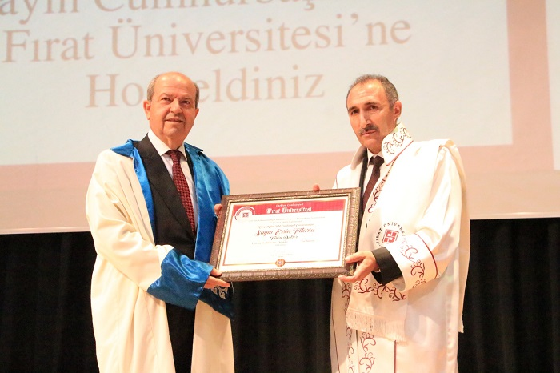
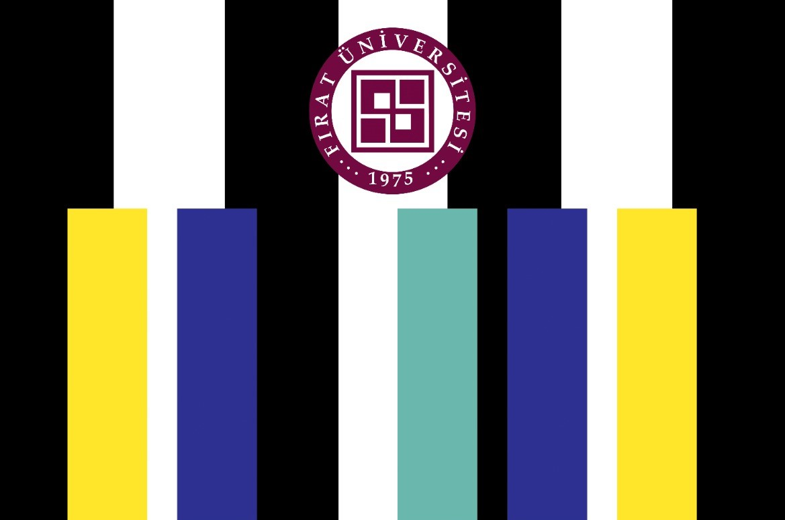
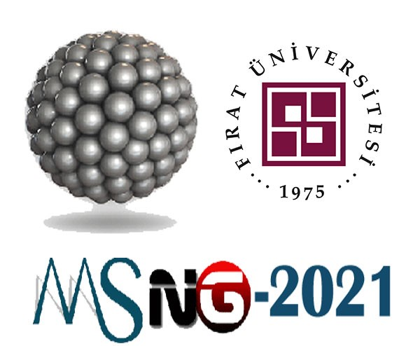
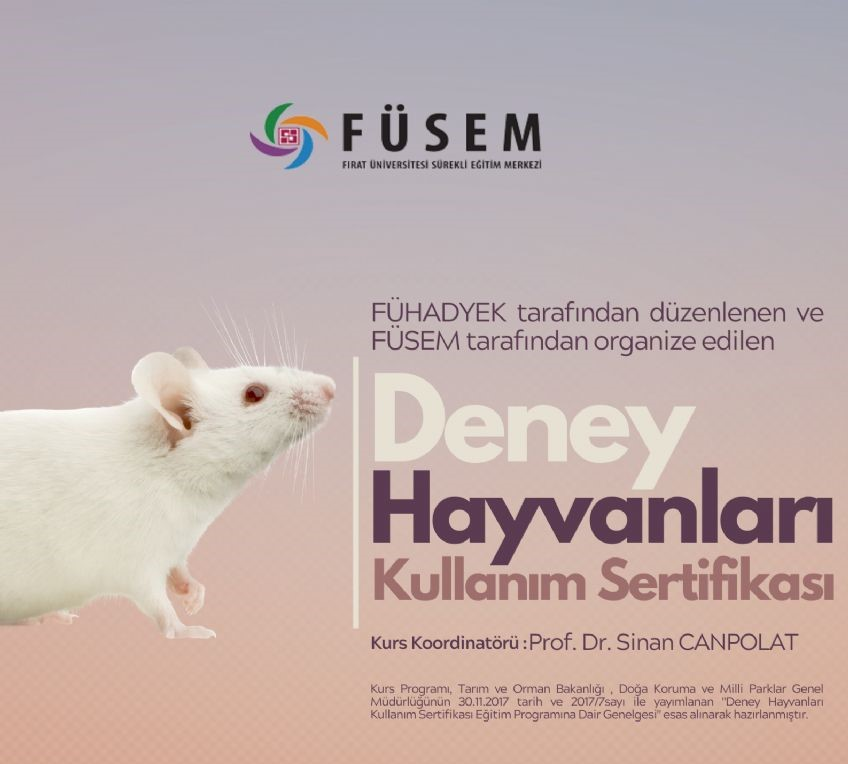

KURUMSAL
Yönetim
Üniversitemiz
Daire Başkanlıkları
Müdürlükler
Koordinatörlükler
Uluslararası Ofis
ÖĞRENCİ
Aday Öğrenci
Öğrencilerimiz
Mezun
AKADEMİK
Fakülteler
Enstitüler
Yüksekokullar
Meslek Yüksekokulları
Araştırma Merkezleri
Rektöre Bağlı Birimler
Ders Katalogları
ARAŞTIRMA
Araştırma Projeler Birimi
Fırat Teknokent
Üniversite Yayınları
Kütüphane
Fırat Teknoloji Transfer Ofisi
Harput İç Kale Kazısı
Merlab(Merkezi Laboratuvar)
BİLGİ SİSTEMLERİ
Akademik Bilgi Sistemi
Öğrenci Bilgi Sistemi
Mezun Bilgi Sistemi
E-Posta Sistemi
Elektronik Belge Yönetim Sistemi
Personel Bilgi Sistemi
Dosya İndirme Sistemi
Fırat Akademik Anket
Telefon Rehberi
Enstitü Otomasyonu
Kurumsal Açık Arşiv
Konut Otomasyonu
Kütüphane Katalog Tarama
KAMPÜSTE YAŞAM
Etkinlikler
Üniversite Evi
Fırat Haber
Fırat Televizyonu
Kütüphane
Konferans Salonları
Sosyal Merkez
Sosyal Tesisler
Ulaşım-Servisler
Medya Galeri
COVID-19
Covid-19 Salgın Danışma Komisyonu
Yeni Covid-19 Tedbirleri
İLETİŞİM
FIRAT ÜNİVERSİTESİNİ KEŞFET
 
Hastane
Kütüphane
Sanat
Girişim
Mezunlar
HABERLER

Üniversitemiz İlahiyat Fakültesi'nden Mezun Olan...

Mühendislik Fakültesi 2020-2021 Eğitim-Öğretim Yılı...

Üniversitemiz Mimarlık Fakültesi'nden Mezun Olan...

Üniversitemiz Rektörü Prof. Dr. GÖKTAŞ, KKTC...
Tüm Haberler >>
ETKİNLİKLER
Adli Bilişim Uzmanlığı Eğitimi
21 Haziran

PİYANO RESİTALİ
17 Temmuz

8. Uluslararası MSNG 2021 Konferansı
21 Temmuz

Deney Hayvanları Kullanım Ser. Eğitimi
28 Temmuz
Tüm Etkinlikler >>
Fırat Üniversitesi Tanıtım Videosu
45.359
Aktif Öğrenci
2.128
Yabancı Uyruklu Öğrenci
60.547
Mezun
2.105
Akademik
2.000
İdari Personel
16
Fakülte
4
Enstitü